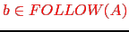
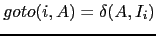

Sig: Definición Dirigida por la Sup: Análisis Sintáctico Ascendente en Ant: Esquemas de Traducción Con:
Supongamos que jison esta inmerso
en la construcción de la antiderivación a derechas y que la forma sentencial
derecha en ese momento es:
y que el mango es  y en la entrada quedan por procesar .
No es posible acceder en jison a los valores de los atributos de los estados en la pila
del analizador que se encuentran ``por debajo'' o si se quiere
``a la izquierda'' de los estados asociados
con la regla por la que se reduce.
Vamos a usar un pequeño hack para acceder a los atributos asociados con símbolos vistos en el pasado "remoto":
[~/jison/jison-inherited(grammar)]$ cat inherited.jison
%lex
%%
\s+ {}
(global|local|integer|float) { return yytext; }
[a-zA-Z_]\w* { return 'id'; }
. { return yytext; }
/lex
%%
D
: C T L
;
C
: global
| local
;
T
: integer
| float
;
L
: L ',' id {
console.log("L -> L ',' id ("+yytext+")");
var s = eval('$$');
console.log(s);
}
| id {
console.log("L -> id ("+yytext+")");
var s = eval('$$');
console.log(s);
}
;
%%
Veamos un ejemplo de ejecución:
[~/jison/jison-inherited(grammar)]$ cat input.txt global integer a, b, c [~/jison/jison-inherited(grammar)]$ node inherited.js input.txt L -> id (a) [ null, 'global', 'integer', 'a' ] L -> L ',' id (b) [ null, 'global', 'integer', 'a', ',', 'b' ] L -> L ',' id (c) [ null, 'global', 'integer', 'a', ',', 'c' ]
Esta forma de acceder a los atributos es especialmente útil cuando se trabaja con atributos heredados. Esto es, cuando un atributo de un nodo del árbol sintáctico se computa en términos de valores de atributos de su padre y/o sus hermanos. Ejemplos de atributos heredados son la clase y tipo en la declaración de variables.
Es importante darse cuenta que en cualquier derivación a derechas
desdeD, cuando se reduce por una de las reglas
el símbolo a la izquierda de L es T y el que esta a la izquierda de T es C. Considere, por ejemplo la derivación a derechas:
Observe que el orden de recorrido de jison es:
en la antiderivación, cuando el mango es una de las dos reglas
para listas de identificadores, L
 id y L
id y L
 L, id
es decir durante las tres ultimas antiderivaciones:
L, id
es decir durante las tres ultimas antiderivaciones:
las variables a la izquierda del mango son
T y C. Esto ocurre siempre.
Estas observaciones nos conducen al siguiente
programa jison:
[~/jison/jison-inherited(deepstack)]$ cat inherited.jison
%lex
%%
\s+ {}
(global|local|integer|float) { return yytext; }
[a-zA-Z_]\w* { return 'id'; }
. { return yytext; }
/lex
%%
D
: C T L
;
C
: global
| local
;
T
: integer
| float
;
L
: L ',' id {
var s = eval('$$');
var b0 = s.length - 3;
console.log("L -> L ',' id ("+yytext+")");
console.log($id + ' is of type ' + s[b0-1]);
console.log(s[b0] + ' is of class ' + s[b0-2]);
}
| id {
var s = eval('$$');
var b0 = s.length - 1;
console.log("L -> id ("+yytext+")");
console.log($id + ' is of type ' + s[b0-1]);
console.log(s[b0] + ' is of class ' + s[b0-2]);
}
;
%%
A continuación sigue un ejemplo de ejecución:
[~/jison/jison-inherited(deepstack)]$ node inherited.js input.txt L -> id (a) a is of type integer a is of class global L -> L ',' id (b) b is of type integer a is of class global L -> L ',' id (c) c is of type integer a is of class global
En este caso, existen varias alternativas simples a esta solución:
D : C T L ;
current_type, current_class
C
: global { current_class = 'global'; }
| local { current_class = 'local'; }
y depués accederlas en las reglas de L
Casiano Rodríguez León